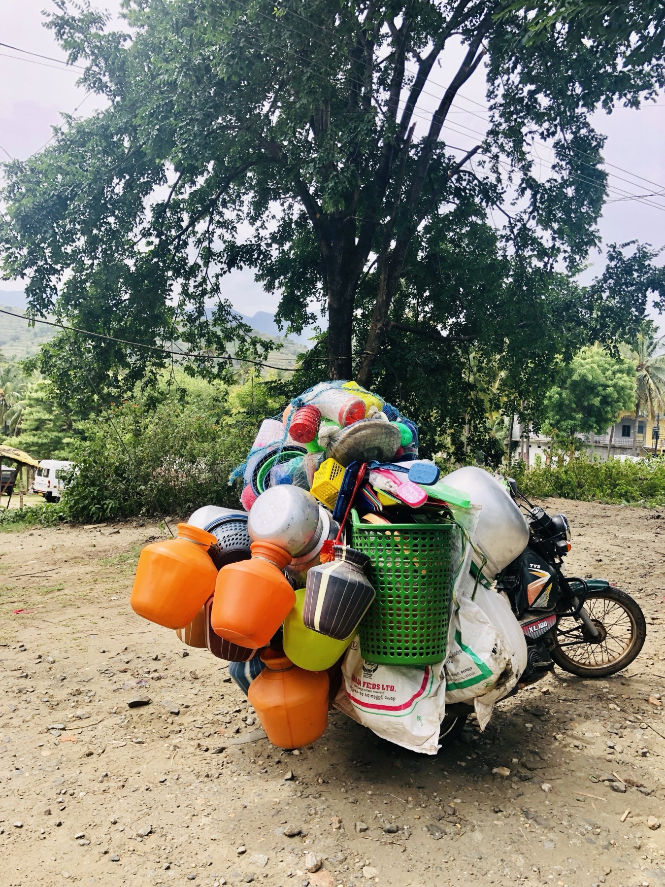
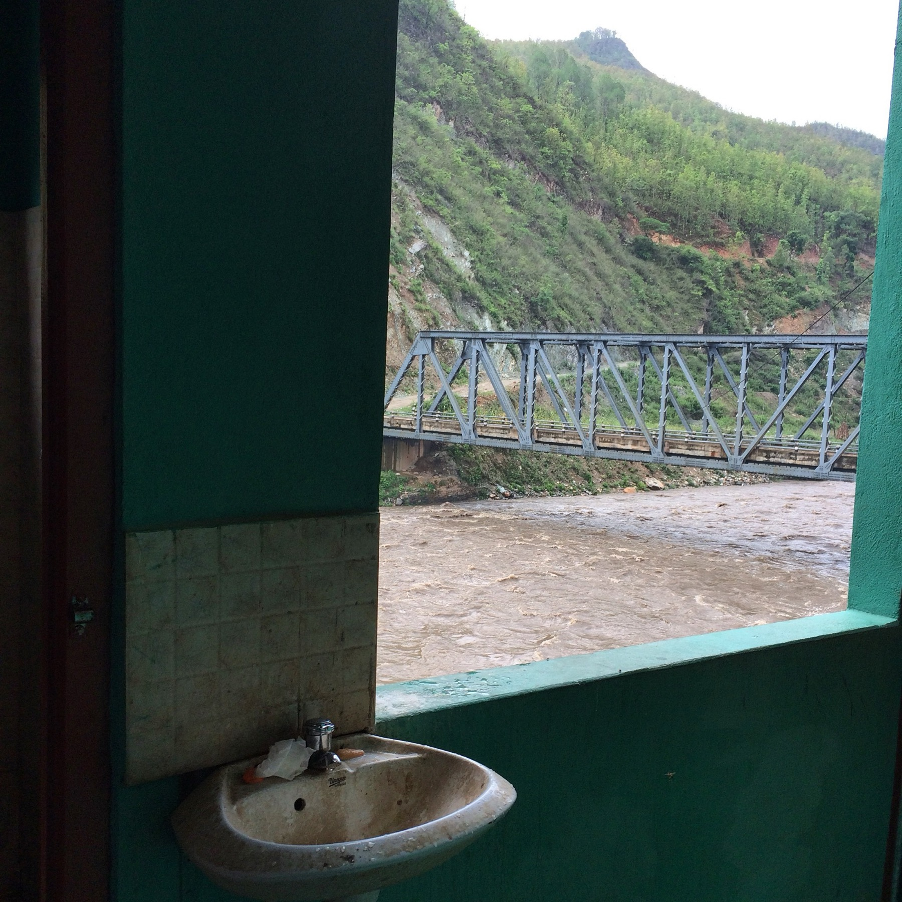
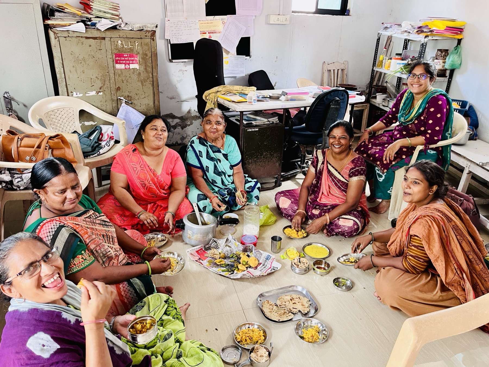

Surili Sheth

Fieldwork
My research is grounded in long-term fieldwork and collaboration with communities, researchers, and institutions in India. These photographs document some of the places, people, and research processes that shape my work.





Earlier Fieldwork
Earlier research and development work has also taken me to other parts of South Asia and sub-Saharan Africa.